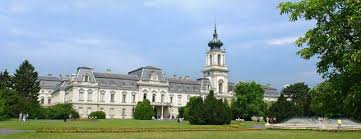

A Festetics család Magyarország egyik legjelentősebb grófi, majd hercegi családja. A horvátországi származású család a 17. századtól él Magyarországon, 1739-től Keszthelyen. Ekkor szerzi meg Festetics Kristóf (1696–1768) a keszthelyi birtokot és tartozékait, és az uradalmat választja birtokai központjának. Jelentős érdeme a kastély felépítése, ugyanakkor emellett sebészorvost és mestereket hozat a városba, valamint gyógyszertárat és uradalmi kórházat létesít.
Kristóf fia, III. Pál (1722–1782) Mária Terézia királynő udvari, majd kancelláriai tanácsosa. Ezt követően az udvari kamarához kerül, és a királynő bizalmasaként kidolgozza az Urbárium alapjait. Mária Terézia 1772-ben grófi rangra emeli, titkos tanácsosi címet kap és a magyar kamara alelnöke lesz. Politikai tevékenysége mellett létrehozza Keszthelyen az első elemi és középiskolát.

Vissza a főoldalra